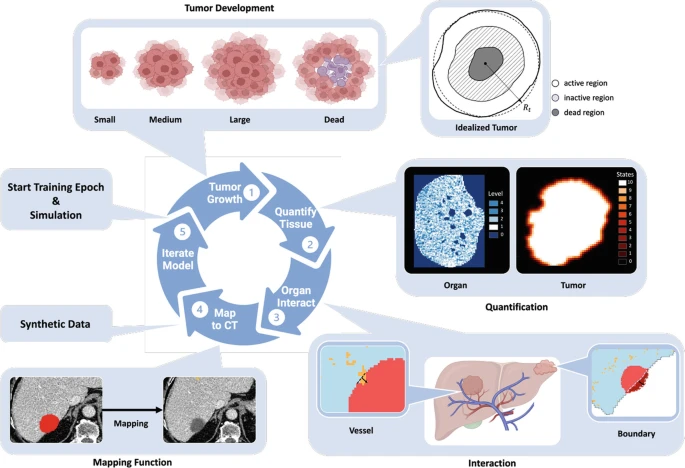

About Me
Hi, my name is Qixin Hu (胡琪鑫). If you can't read Pinyin, you can pronounce it as "Chee-sheen Who." I am a second-year Ph.D. student at USC, working with Prof. C.-C. Jay Kuo. Currently, I am an Applied Scientist Intern on the Agentic AI Team, Amazon Web Services (AWS). Previously, I was a Research Intern on the Efficient AI Team, NVIDIA. My research lies broadly in representation learning, generative AI, and foundation models. Specifically, I want to design simple and efficient learning algorithms and apply them to real-world applications.
I am very fortunate to have had opportunities to collaborate with Prof. Qi Dou, Prof. Alan Yuille, and Prof. Xinggang Wang. I am a recipient of the Viterbi Fellowship.
Recent News
Open Source Contributions
Lead Author & Primary Maintainer. Designed a general retrieval-augmented framework that lets long video generation models retrieve relevant prior content instead of relying solely on the recent context window.
Developed the inference engine for infinite video generation. Upgraded the existing architecture by designing an online relative RoPE to support infinite-length outputs.
Co-first Author & Primary Maintainer. Architected and implemented a novel evolving memory pipeline, enabling training-free stable infinite video generation.
Lead Author & Primary Maintainer. Pioneered successful demonstration of competitive liver tumor segmentation relying exclusively on synthetic training data.
Selected Publications


Experience
Agentic AI Team, AWS
- Applied Scientist Intern (Jun 2026 – Current)
- Topic: GenAI and Agentic Systems
- Managers: Dr. Peng Tang & Yash Singh
Efficient AI Team, NVIDIA
- Research Intern (Jan 2026 – May 2026)
- Topic: Video Generation
- Managers: Dr. Yukang Chen & Prof. Song Han
Honors & Awards
- 2024 USC Viterbi School of Engineering / Graduate School Fellowship
- 2022 First Class Zhixing Outstanding Student Scholarship
- 2021 Outstanding Graduate Student
- 2020 Honored Undergraduates
- 2018 National Encouragement Scholarship